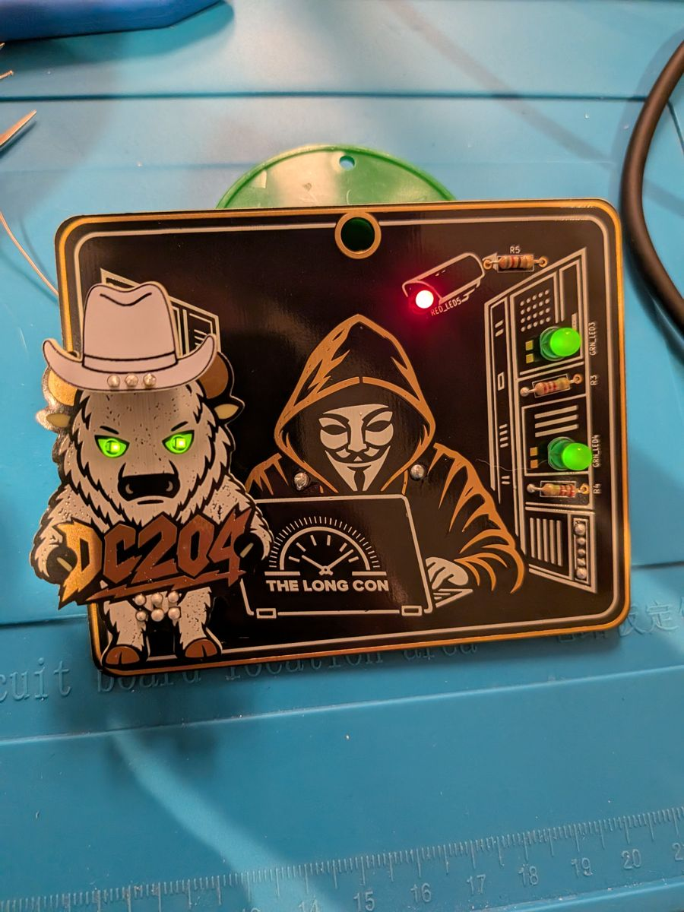
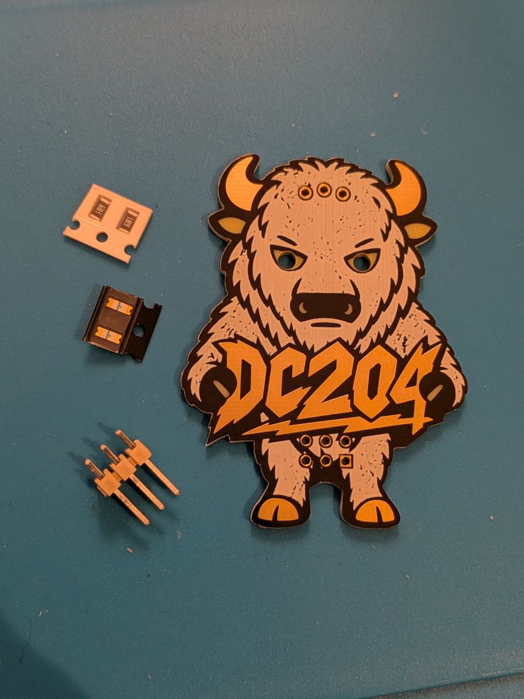
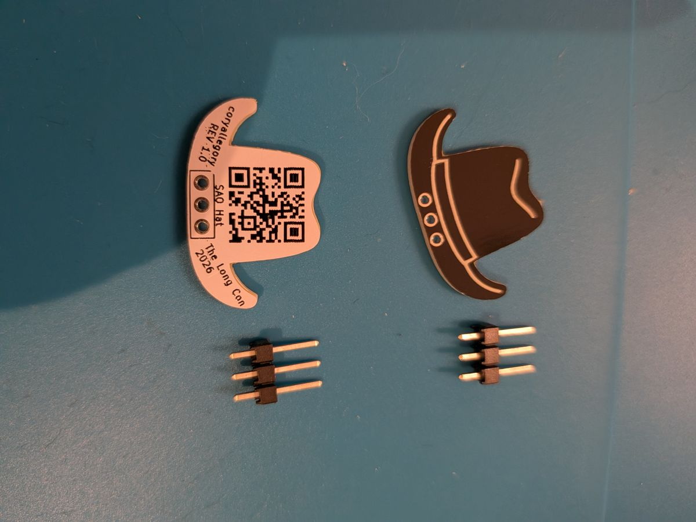

← The Long Con 2026 Soldering Kit

The SAO fully assembled, plugged into the base badge.
SAO stands for Simple Add-On. It is a tiny circuit board that plugs into a conference badge through a small standard connector. The connector gives the add-on power and a couple of signal lines, so it can be as simple as a couple of blinking LEDs or as clever as a small microcontroller.
The SAO idea comes from the badge-making community ("badgelife"), which agreed on one connector so any SAO fits any badge that has a socket.

Get your SAO working to earn a hat, and choose your alignment: white hat or black hat.

White hat (left) and black hat (right).
Show us your SAO is working to receive a hat as flair.